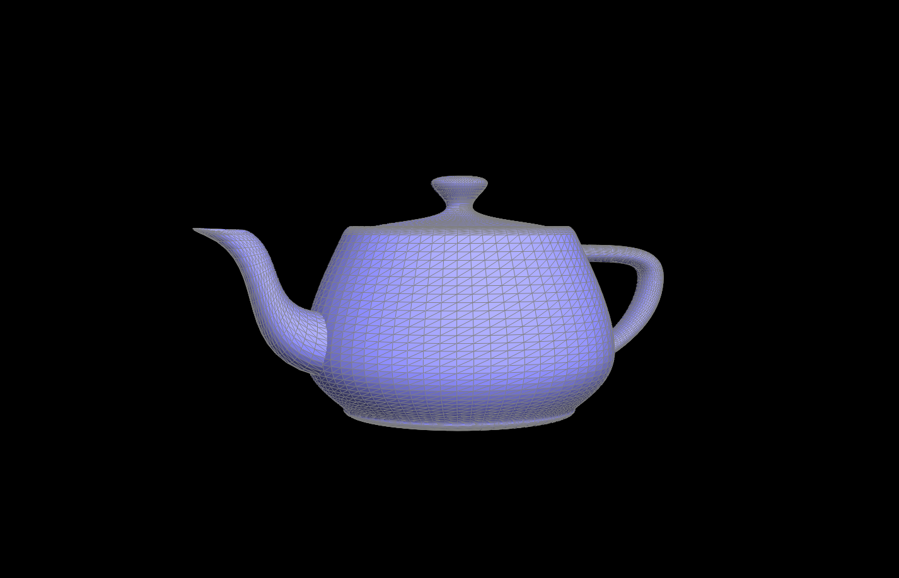
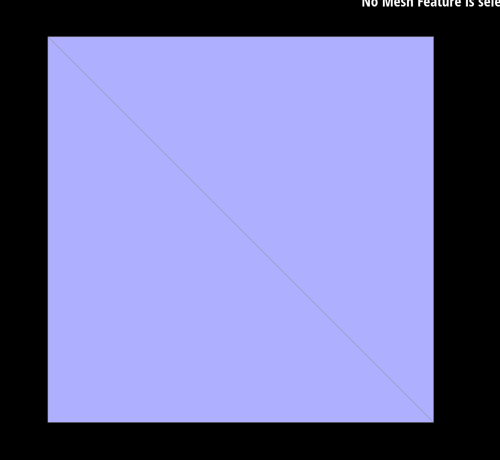

In this project, we explored how to interact with triangle meshes and implemented de Casteljau's algorithm and loop subdivision. The most interesting part to us was the idea of half-edge data structure. It seemed really genius to us that we could store such a complicated data structure and pointers with the half-edge.
Task 1
Implementation:
In this part, we implemented the bezier curve interpolation using de Casteljau's algorithm. Given n control points, at each level we interpolate bewteen each two points using the lerp function to generate a new point, thus resulting in n-1 new points after one step of the algorithm. We run this algorithm until there's only one point left, and this point is on the bezier curve. Here is an example of running the algorithm.
Step 1
Step 2
Step 3
Step 4
Step 5
A slightly different set of control points
Task 2
In this part, we apply the de Casteljau's algorithm on the 3-D surface. The process is the same as a set of 2-D control points, but now we apply lerp on the 3-D points. In the 3-D case, we're given an nxn matrix of control points. For each row, which has n control points, we evaluate the bezier curve same way as part 1, resulting in n new points. We then apply the algorithm on the n new points to get a final point that's on the 3-D bezier surface. Here's an example.
Teapot

Task 4
Implementation:
For the edge flip operation, we relied heavily on this document to guide our thinking.
We initially wanted to try simply rotating the orientation of the vertices and matching their associated relationships to halfedges, and edges after the rotation.
However, we quickly realized this wasn't doable because we would have to reassign pointers for all the edges each vertex is connected to outside of the two triangles (overcomplicating our task).
We then decided to do pointer reassignments only. After figuring out how to grab all of the elements we needed (10 halfedges, 4 vertices, 4 edges, and 2 faces), it was only a matter of connecting the dots
and reassigning each element's twin, vertex, edge, halfedge, and/or face to the new relationships after making the flip.
Debugging:
Fortunately we didn't run into any problems debugging after changing our implementation to only doing pointer reassignments.
However when we initially tried rotating the vertices, we ran into an infinite loop and the edge wouldn't flip which we thought was pretty interesting.
Pictures of our Flips!
Flipped Teapot
Regular Teapot
Task 5
Implementation:
After implementing the edge flip operation, the edge split operation was fairly straight forward. We first referenced a diagram from ED that would allow us to understand the new relationships
between each of the old edges, vertices, faces, and half edges and the new additional edges, vertices, faces, and half edges. It was the same process as edge flip only we had to create
6 new halfedges, 1 new vertex, 3 new edges, and 2 new faces and of course connect their attributes (twin, face, edge, etc.) to an element according to the diagram we referenced.
Diagram

Debugging:
The only issue we ran into was setting the new vertex's position correctly. We set it to the midpoint of the wrong two vertices. It was a pretty easy fix after figuring out what the correct vertices should be based on the diagram.
Pictures of our Splits and Flips!
Split Teapot
Split and Flipped Teapot
Regular Teapot
Task 6
Implementation:
For this part, we implemented loop subdivision. In general, each triangle face is subdivided into 4 smaller faces by the midpoints of each edge. To do this, we first call splitEdge from part 5 on all the original edges, and the flip all the new edges that connect an old vertex and a new vertex. This would complete the division. To correctly update the positions of each vertex, before splitting and flipping anything, we first save the predicted new positions of the old vertices in a field of Vertex called newPosition, and save the predicted positions of the new vertices in newPosition field of the edge on which the vertex will be created on. In the same loops, we can set the isNew fields of the vertices and edges correctly as well, so that we can split and flip the correct edges later. After flipping, we simply set the positions of each vertex as the values saved in the newPosition field.
This is an example of the torus being upsampled. The object started with really sharp corners and edges, and it smoothed out after repeated upsampling. This is similar to how supersampling smooth out edges in the last project. In the same area there are more triangle faces and thus can create smoother edges. Specifically, the position calculation of the loop division is designed to average out the vertices to smooth out the corners.
However, we can pre-process the object to try and preserve some corners. This is an extreme case where we split a ton of edges on the left upper corner so that it becomes harder for loop subdivison to smooth it out. We can see that even though the general edges are smoothed out, the corner on the left is still there.
The cube does not upsample symmetrically as demonstrated below. This is because the starting cube is not symmetric. There's only one diagonal edge. By pre-processing the cube into a symmetric starting point, it upsamples much more symmetrically. Specifically, I split the diagonal edge so that the cube is symmetric.
Cube upsampling of level 1, level 2, level 3, and level 5


Cube upsampling of level 1, level 2, level 3, and level 5 with pre-processing